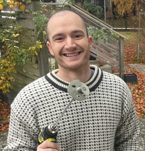
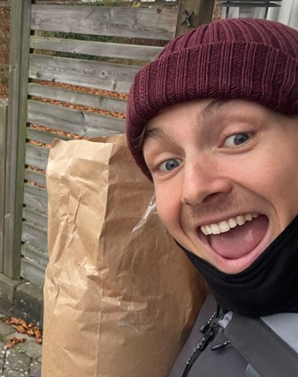
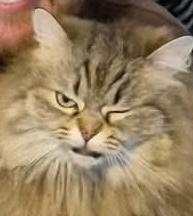
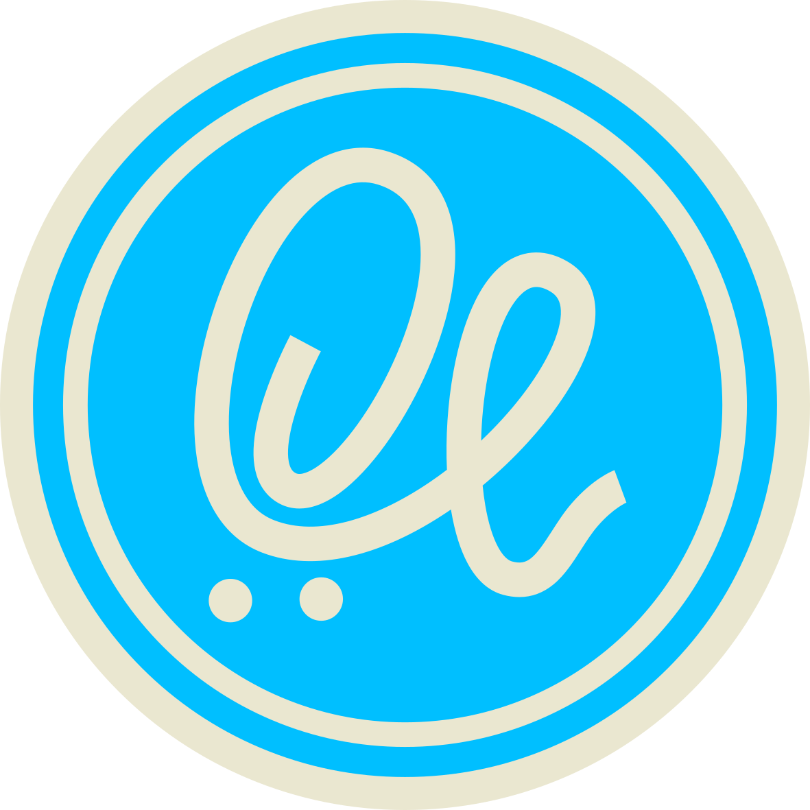

Anton Kuusijärvi
Chefsbryggare
Anton har bryggt öl i över 5 år och specialiserar sig på nordiska smaker med lokala råvaror.
Vi är Spoonvalley Hantverksbryggeri, njut av din vistelse!
Utforska
Chefsbryggare
Anton har bryggt öl i över 5 år och specialiserar sig på nordiska smaker med lokala råvaror.

Kvalitetsansvarig
Anna experimenterar med olika smaker och även icke-alkoholosika öl. Hon är en av de mest talade ölutvecklarena i Skedala, Halmstad.
Ölutvecklare
Albin har en unik förmåga att kombinera traditionella och moderna bryggmetoder för att skapa unika högprocentiga öl.

Ölutvecklare
Max är en passionerad bryggare som älskar att experimentera med olika humlesorter och maltprofiler för att skapa komplexa smaker.

Maskott
Bryggmisse Svea är alltid med och övervakar bryggprocessen. Hon är en viktig del av teamet och älskar att smaka på de nya ölen som skapas.
